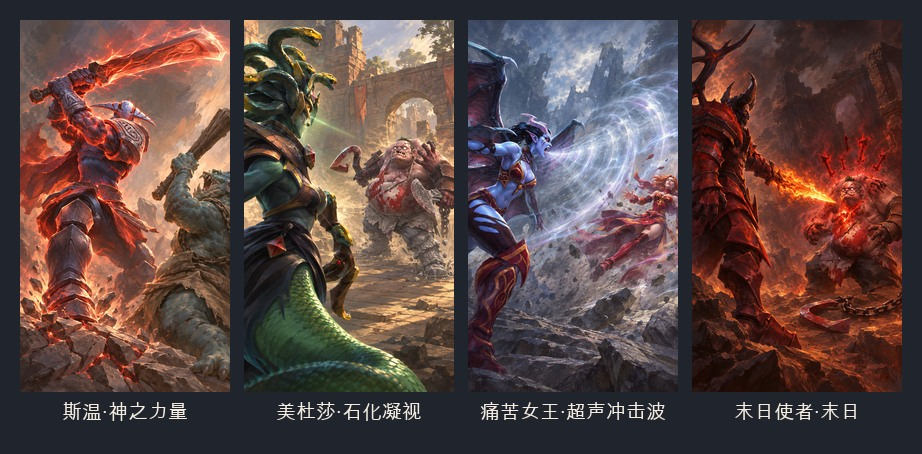

斯温·神之力量

生成描述
为yf-artifact画Dota 2英雄斯温施放「神之力量」的全新技能场景。斯温以官方全盔、蓝甲、红布和巨剑为基础，启动神之力量，身体肌肉与铠甲接缝被红热力量充满，双手把巨剑高举到肩后，前腿踏裂浅灰石地。右前方既有蓝皮营地守卫抬木棒招架、身体后缩。焦点是被力量绷紧的双臂、巨剑和落脚裂痕，背景保留浅暖灰大色块，技能读感来自力量状态与压迫动作。
已完成 4 张，Migoo Flare，768×1360。按官方技能名选题，英雄使用官方造型参考，其他出场角色使用英雄或已有单位图。每张另配两幅Classic无框原画，点图可打开原图。

为yf-artifact画Dota 2英雄斯温施放「神之力量」的全新技能场景。斯温以官方全盔、蓝甲、红布和巨剑为基础，启动神之力量，身体肌肉与铠甲接缝被红热力量充满，双手把巨剑高举到肩后，前腿踏裂浅灰石地。右前方既有蓝皮营地守卫抬木棒招架、身体后缩。焦点是被力量绷紧的双臂、巨剑和落脚裂痕，背景保留浅暖灰大色块，技能读感来自力量状态与压迫动作。
为yf-artifact画Dota 2英雄美杜莎施放「石化凝视」的全新技能场景。美杜莎保留官方蛇发、面孔、金饰、弓与蛇尾，上身在左前景回头凝视。右中景帕吉正面对她，脚到膝部已变成灰石，围裙下摆和手中链条的一部分也被石化，身体上部仍保持原版灰白躯干与惊愕面孔。用明确的石化分界、凝视方向和停止的退步表现石化凝视，画面中央留空，背景是暖石庭院。
镜头斜侧近景，痛苦女王张翼发声，波前横贯画面
用光阴天柔光，压缩空气边缘反亮
主色痛苦女王蓝肤红黑翼、乳白冲击、莉娜红发衣
为yf-artifact画Dota 2英雄痛苦女王施放「超声冲击波」的全新技能场景。痛苦女王位于左前景张开红黑恶魔翼，保留官方角形、蓝肤、面貌与装束，身体前倾发出超声冲击波。宽而薄的乳白空气波从她前方横过画面，右侧莉娜被冲得后滑，红发与裙摆同时向后扬，周围石屑沿同方向飞。突出女王的发声姿态、弯曲空气波前和莉娜受力反应。
镜头低机位侧看，末日使者以剑尖指向目标
用光阴暗环境，火剑与诅咒裂痕小面积炽亮
主色末日暗红甲与火剑、帕吉灰白、深褐残墙
为yf-artifact画Dota 2英雄末日使者施放「末日」的全新技能场景。末日使者保留官方恶魔头形、角、暗红装甲、翅与火剑，在左前景把剑尖指向右侧帕吉。帕吉弯腰收紧身体，肉钩与链条沉在地上，头上方与胸前出现几段暗红裂口状诅咒，嘴和施力手周围的空气像被压住。火焰集中在火剑和贴身咒痕，身体皮肤完整，用重压姿态与熄暗器物表达被末日限制的瞬间。